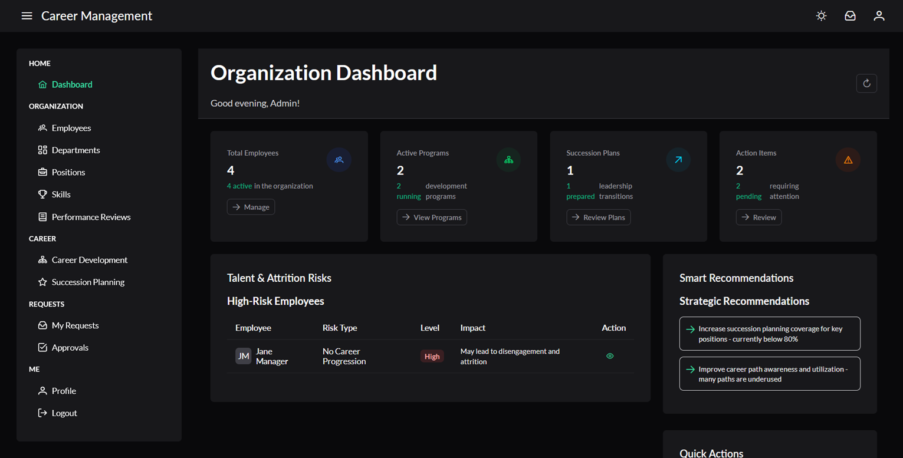
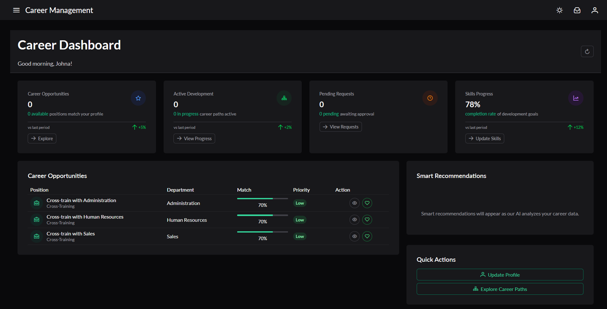
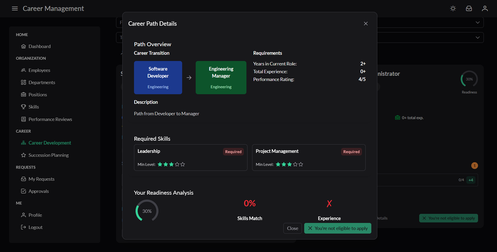
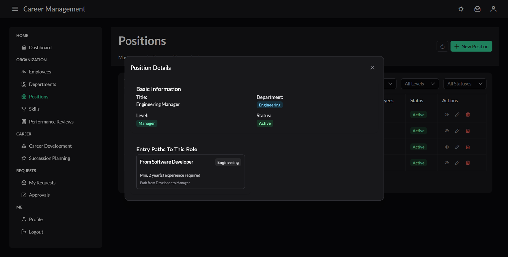
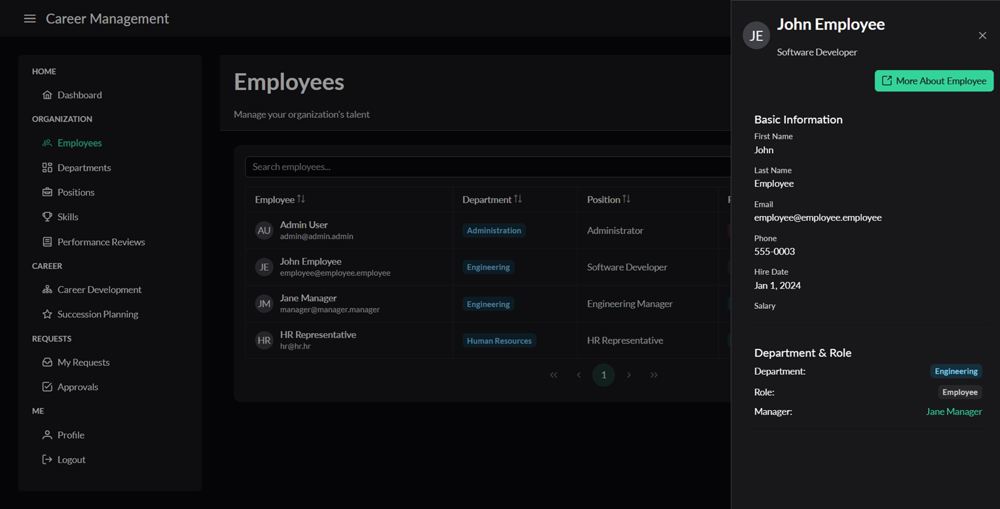
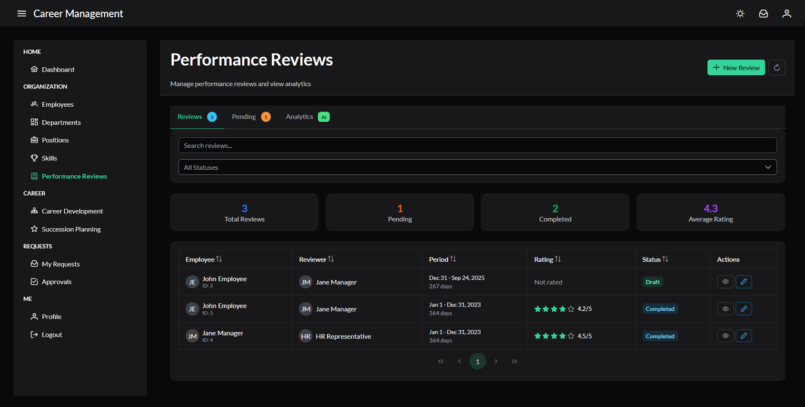
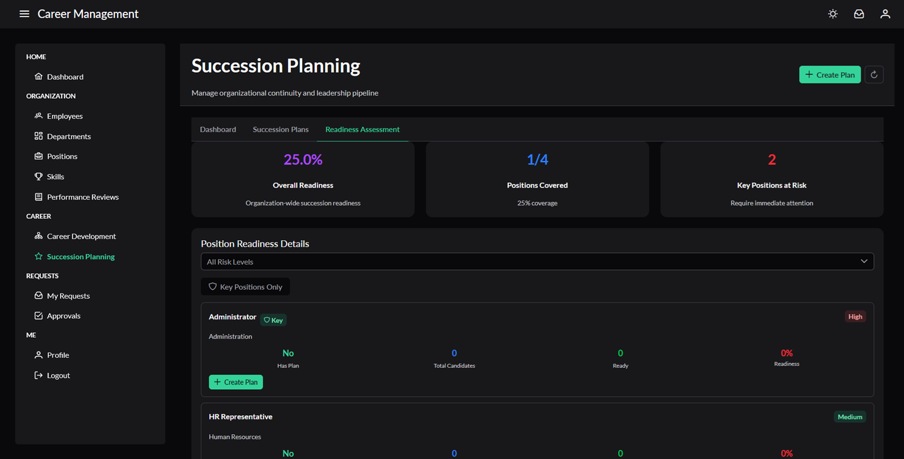
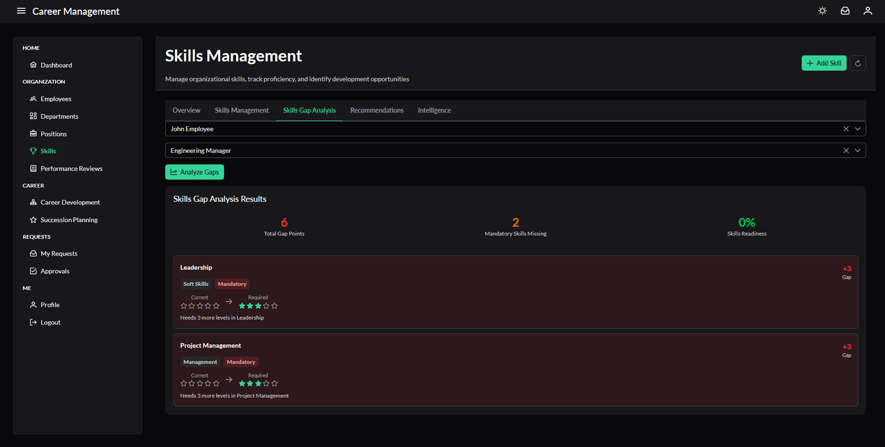

Internship - Career Management HRMS Platform
Project Description
This was the main thing I worked on during my internship at Square-it / HRMaps. The idea is a career management module for an HRMS, essentially a system that helps companies manage employees' career progression, not just their basic info.
The back-end is ASP.NET with a fairly layered architecture: controllers, services, DTOs, and a DbContext all living in their own lanes. The front-end is Angular with PrimeNG components and Tailwind for styling.
Career Intelligence
What I'm probably most proud of is the intelligence layer I built, CareerIntelligenceService. It ties everything else together and makes the app actually smart. It analyzes each employee's performance reviews, skills, tenure, and career path data, then generates things like:
- Promotion readiness scores
- Attrition risk predictions
- Personalized skill development recommendations
The dashboard is role-based. HR gets an org-wide view with talent risks and strategic recommendations, managers get team dynamics insights, and employees get their own career intelligence report, all from the same service.
Admin Dashboard

Employee Dashboard

Core Features
The rest of the app covers the full HRMS surface:
- Employee profiles with skills, experience, and education tracking
- Department and position management
- Performance reviews
- Succession planning
- Career path configuration
- An approval workflow for requests like promotions and department transfers
The request system was fun to build. It's smart about roles, so a manager submitting a request on behalf of someone else skips straight to HR approval instead of going through the normal pending flow.
Screenshots





